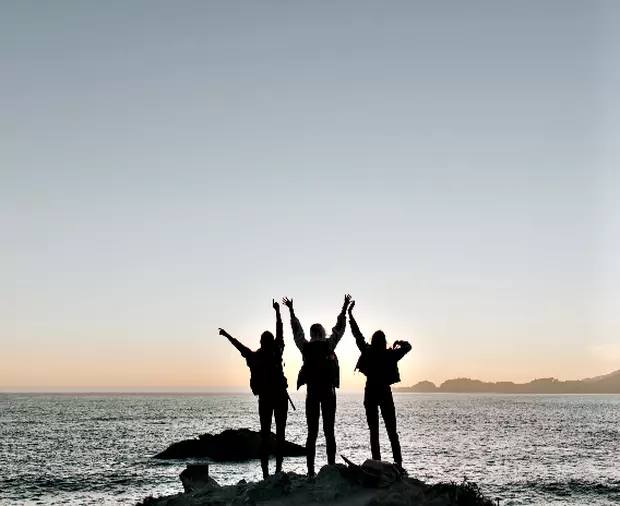
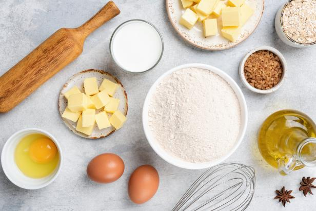
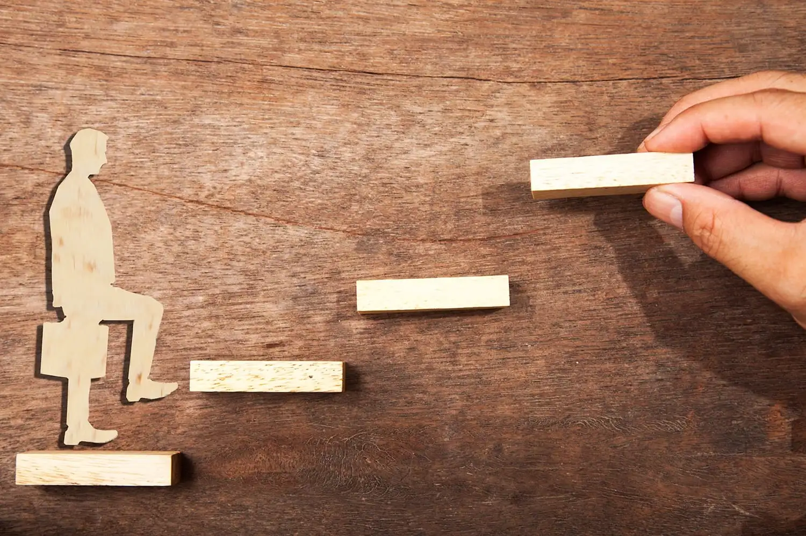
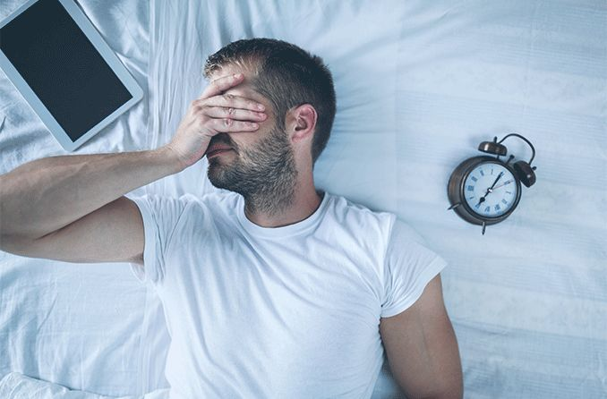
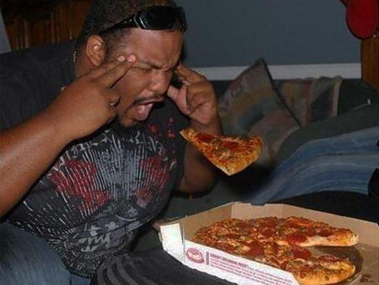

Hello everyone. My name is Gabe Aquino. I'm a 2nd year computer science major hoping to gradaute sometime in spring 2024. I'm very excited for this class because there are so many things I want to learn, software engineering being one of them

Background
General College Info
Hello everyone. My name is Gabe Aquino. I'm a 2nd year computer science major hoping to gradaute sometime in spring 2024. I'm very excited for this class because there are so many things I want to learn, software engineering being one of them
Where I'm From
I was born and raised in the Philippines. I moved to the United States when I was 7 with my family. Adjusting to the different lifestyles was a challenge, but I eventually got the hang of being an American. Personally, I'd much rather stay here than visit the Philippines again. Not that I would never move back... just not now. :)
Family/Friends
I have 2 older brothers and way too many cousins (I've lost count). I'm not really that close with my family, so I don't really have much to talk about. As for my friends, I have 5 close ones from high school; 2 of them go to UMBC! During the break, we often hangout by eating food (typically Asian) and most importantly, end off the day by eating ice cream! I miss them </3

Hobbies
Video Games
I don't think it's really a surprise that people like me would have video games as
their hobby. I know... how unoriginal. Anyway, I'm really invested into RPG games
like Omori and Persona 5 Royal (both of which, I'm part of the toxic
fandom lol). When I was younger, I used to be into Pokemon. Now, I'm just an
observer who hasn't bought any of the new games (mostly because I don't have
a Switch </3). I might play FF7 (the remake) eventually. I also play rhythm
games on the side.

Listening to Music
I LOVE Paramore. I listen to Paramore everyday. I've literally favorited all of their songs on Spotify. If Paramore has a million fans, I'm one of them. If Paramore has 5 fans, I'm one of them. If Paramore has 1 fan, that one is me. If Paramore has no fans, I'm no longer alive. If the world is against Paramore, I'm against the entire world. Till my last breath, I'll support Paramore <3. Anyway... I just generaly like punk rock (o_o;;) I also listen to KPOP (unfortunate) as well as video game OST if I'm really that bored (so... all the time). As for JPOP, I highly recommend Eve, YOASOBBI, and Ado. Did I ever mention that I really like Paramore?

Running
When I was in middle school, I got into the cross country team. Ever since up until the end of sophomore year, I've been of my school's cross country and track team. For track, I ran the 800m and 1600m. Despite being on the lower end of the team, I still enjoyed running. I've made some friends while I ran during high school. I tried keeping up with the hobby during college, but it's mostly on-and-off.

Life Goals
Make New Friends
I've always wanted to meet new people and make new friends in college. However, I've realized that I really have to put in the effort to talk to people first. I'm still working on it myself and hopefully, I'll make new life long friends.
Learn How to Bake
I genuinely LOVE baking! Unforunately, I dont' have either the equipment nor money for this hobby </3 Hopefully once I have a job, my own apartment where I can bake, as well as the desire to bake, I can make something that I really like (as well as eat it in the end :P ) Baking with friends is also a plus (assuming I make new friends later on...) Some specific things that I want to bake in the future are: brownies, cookies, and cupcakes.
Become a Better Person
I won't go too much into detail about my personal wellbeing, but I will say that I do have a lot of things in my mind that I want to improve about myself. One of them being my confidence. Because of my condition, it's really difficult for me to just go up to somoene and start talking. Essentially, I worry too much about what that person might think about me. It's been tough so far, but I think I've made some progress compared to a couple years ago.
3 Wishes
Never Have to Sleep
We spend roughly 6-8 hours a day sleeping. Could you image what I could've done during that time? To clarify, I mean that sleeping just won't have to be a thing that I have to do; Sleeping is no longer required. I could still sleep, but it'll just be like any other activity, like watching TV. If I didn't had to sleep, I'd probably just spend the new time I have just playing video games (I mean, what did you expect?)
Make Clones of Myself
I consider myself a busy man. We often have to make the hardest choices in life such as: doing our work or playing video games. Bruh! I just want to make clones of myself and force them to do all of my tasks while I just sloth around as usual. Yeah... you probably should have a good idea as to what type of person I am based on these first 2 wishes lol. As for shared experience, why not. Whatever my clones experience, I should remember as well. That'll probably backfire, but it'll at least keep things interesting.

Telekinesis
Alright... at this point, this section is mostly just showing how lazy I am! But yeah, moving things with my mind? Awesome! I'll probably use it to move food and close the door without every having to leave the confines of my bed. With the power of never having to sleep, making clones, and having telekinesis, I'd be UNSTOPPABLE!!! (until someone orders me to actually do something </3)
